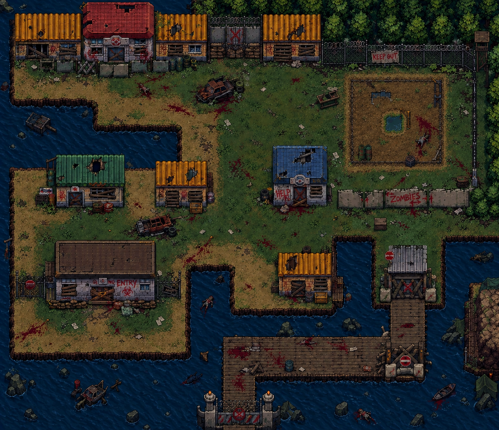

TRANSMISSÃO DE EMERGÊNCIA // 07:42
ARQUIVO CENTRAL — ZONA 04
VOCÊ ENTROU.
AGORA SAIA.
Uma cidade isolada. Sistemas interrompidos. Pistas deixadas para trás. Explore o que restou e descubra como atravessar a zona.
01 / CONTEXTO
O que aconteceu
com este lugar?
Ninguém sabe ao certo quando a cidade foi evacuada. O que se sabe é que os portões foram fechados, os sistemas falharam e alguma coisa ficou para trás.
O projeto combina exploração em pixel art com enigmas e decisões. Cada objeto pode carregar uma informação; cada rota pode mudar o que vem depois.
Conhecer a história ↗02 / RELATÓRIO DE CAMPO
Três frentes de investigação

Reconheça a zona
Conheça os ambientes, os limites e as rotas que ainda podem ser atravessadas.
↗Examine os vestígios
Ferramentas, credenciais e documentos podem revelar mais do que aparentam.
↗Reconstrua a sequência
Conecte pistas, teste hipóteses e descubra o que mantém a saída bloqueada.
↗03 / PROTOCOLO DE SAÍDA
O tempo passa.
As pistas ficam.
O protótipo foi pensado para partidas curtas, com exploração, observação e resolução de problemas. Não existe uma única maneira de interpretar tudo o que você encontra.
CONSULTAR MANUAL →04 / FICHA DO PROJETO
Por trás da
quarentena.
Um projeto desenvolvido com tecnologias web, organização modular e direção visual em pixel art.